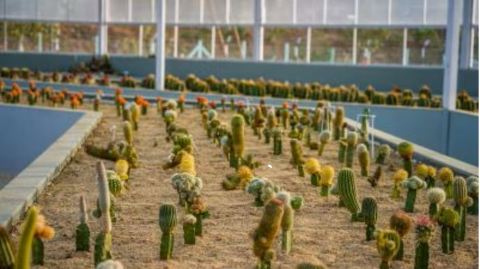

COME, VISIT THE STATUE OF UNITY THE WORLD'S TALLEST
GLIMPSES OF HON’BLE PRIME MINISTER’S VISIT TO THE STATUE OF UNITY
KESUDA TOUR
CACTUS GARDEN
The Cactus Garden is a unique botanical garden at the Statue of Unity site, created to exhibit a huge variety of Cacti and succulents, the true miracles of adaptation. The thought behind the development of the cactus garden is to provide an experience of the desert ecosystem in the midst of a landmass well entrenched in an aquatic surrounding. There are 6 lakh plants of 450 species spread across 25 acres of open land and inside the dome having an area of 836 square metres.
Read More….
RIVER RAFTING
.png)
River rafting is undoubtedly one of the most enthralling and physically demanding adventure sports in the world. Narmada, the largest west flowing river in the country, and the lifeline of millions has now ushered in the thrilling experience for the adventure enthusiasts who can now enjoy river rafting in 4.5 km. stretch with whirlpools, rapids and many turns which provide an exciting and unforgettable rafting experience for the first time in Gujarat.
Read More….
“INDIA HAS GOT A RICH CULTURAL HERITAGE OF “UNITY IN DIVERSITY”, THE ROOTS OF WHICH ARE INEXTRICABLY FOUNDED ON THE PRINCIPLE OF “VASUDHAIV KUTUMBAKAM”, MEANING THAT THE ENTIRE UNIVERSE IS A FAMILY. AT THE TIME OF INDIA’S INDEPENDENCE IN 1947, IT WAS HOWEVER DIVIDED INTO MORE THAN 560 PRINCELY STATES AND IT WAS INDIA’S FIRST DEPUTY PRIME MINISTER, BHARAT RATNA SARDAR VALLABHBHAI PATEL, WHO WITH HIS FIRM DETERMINATION, COULD TRANSFORM SUCH IMPERIALISM INTO TODAY’S UNIFIED INDIA. PEOPLE OF INDIA WILL REMAIN INDEBTED TO HIM FOREVER FOR HIS LEADERSHIP DURING THE FREEDOM STRUGGLE AND HIS VISION, WISDOM AND STATESMANSHIP IN THE POST-INDEPENDENCE ERA. HIS LIFE IS AN ETERNAL SOURCE OF INSPIRATION FOR THE PRESENT AS WELL AS FUTURE GENERATIONS AND IT IS IN THIS CONTEXT THAT HIS ICONIC MONUMENTAL STATUE – THE WORLD’S TALLEST STATUE OF UNITY HAS BEEN DEDICATED TO THE NATION ON THE 143RD BIRTH ANNIVERSARY. SYMBOLIZING THE NATIONAL, SPIRITUAL, HISTORICAL AND ACADEMIC VALUES, THE STATUE OF UNITY WILL LEAD TO THE ICON-BASED DEVELOPMENT OF THIS ENTIRE REGION, WHICH IS PREDOMINANTLY A TRIBAL AREA. OUR VISION IS TO MAKE THIS PLACE A WORLD CLASS TOURIST DESTINATION BY PROVIDING INFRASTRUCTURE FOR EDUTAINMENT, RESEARCH, CULTURAL, ENVIRONMENTAL ENRICHMENT AND HEALTH PROMOTION. A TRUE LEADER KEEPS ON ENLIGHTENING THE PATH OF MANKIND EVEN IN HIS PHYSICAL ABSENCE AND THE STATUE OF UNITY IS THE REALIZATION OF THIS – WORTH EXPERIENCING.“
STATUE OF UNITY |
THE WORLD'S TALLEST STATUE, AT 182 METRES
Statue of Unity India 182 Metres
.png)
Spring Temple Buddha China 153 Metres
.png)
Ushiku Daibutsu Japan 120 Metres
-PhotoRoom.png-PhotoRoom.png)
Statue of Liberty USA 93 Metres
The Motherland Calls Russia 85 Metres
Christ The Redeemer Brazil 38 Metres